今年の夏もやっぱり暑いですね。でも天気予報を見ると、場所によって最高気温に結構違いがあったりします。
埼玉県の熊谷市はその最高気温の高さで有名ですが、天気予報をチェックしたら何と３９度の予報とは！
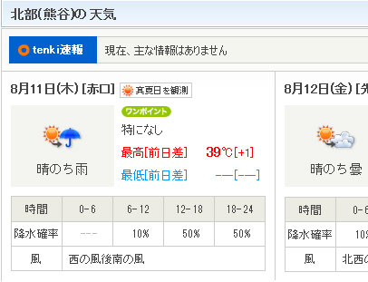
体温をも上回る気温を体験しに、８月１１日（木）に、ムルモとともにはるばる熊谷へ小旅行してきました。
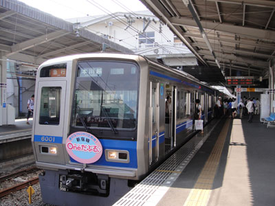
地元の東村山駅を９時半に出発。
西武新宿線に乗り、まずは終点の本川越駅を目指します。
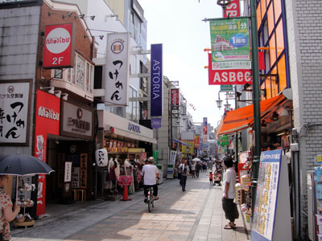
本川越からJR埼京線の川越駅を目指しますが…。
間違えて東武東上線の川越市駅に向かっていることに
気づき、慌てて携帯の地図をチェック。
JR方面は写真のようにものすごく栄えていました。
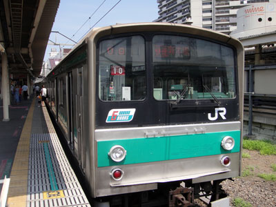
川越駅から乗る電車は、りんかい線直通のJR埼京線の新木場行き。
都会を走る電車だと、あまり小旅行な雰囲気を感じないですね(^^;
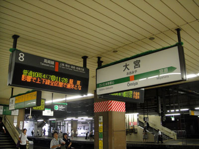
大宮駅でJR高崎線に乗り換え、熊谷駅へ向かいます。
朝９時半に出たのにすでに時間が結構経ってます。
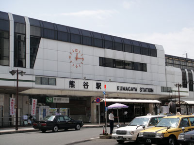
ついに来ました、熊谷駅へ！
駅から出て最初の感想は「本物の暑さだ！」

星川にかかる橋の上で、用意した温度計とともに記念撮影。
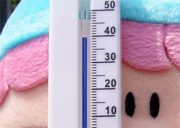
３９度という数字に驚きました！
「暑くて目が回りそうでしゅ・・・」
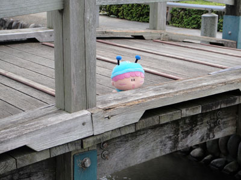
小さ目な橋の上で撮影。
川の上で涼しそうに見えるけど、実際はとんでもなく暑いです。
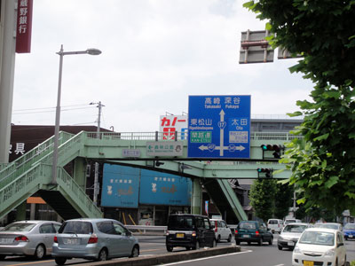
国道１７号をびゅんびゅん走る車を見ると
余計に暑さを感じてしまいます。。
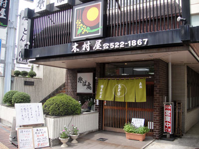
炎天下を１時間くらい歩いていたらだんだんと頭痛が…。
熱中症のサインと感じ、慌ててお昼ご飯にしました。
木村屋さんで鴨汁うどんをいただきました♪
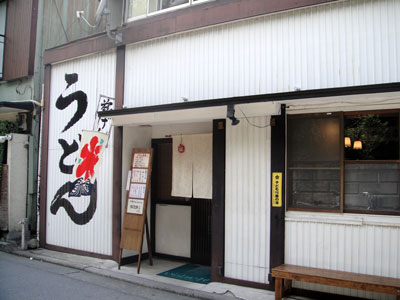
食後は熊谷名物の『雪くま』を食べに
有名店である「慈げん」さんへ。
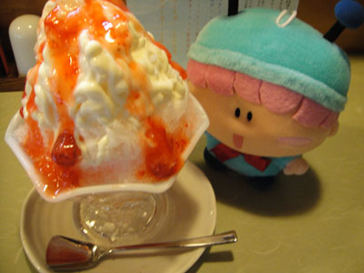
２０１１年新作の『レアチーズイチゴ』味を頼みました。
雪のようにふわふわ柔らかいかき氷と、この独特のシロップが
すごく合って、とても美味しかったです♪
雪くまを食べにまた熊谷へ行きたい・・・。
以上で熊谷旅行レポは終了になります。
皆さんもせっかくの夏休みなので、何か変わった体験をしてみることをオススメします。その際は掲示板にてぜひ熱くレポしてくださいね。
(2011/8/12)